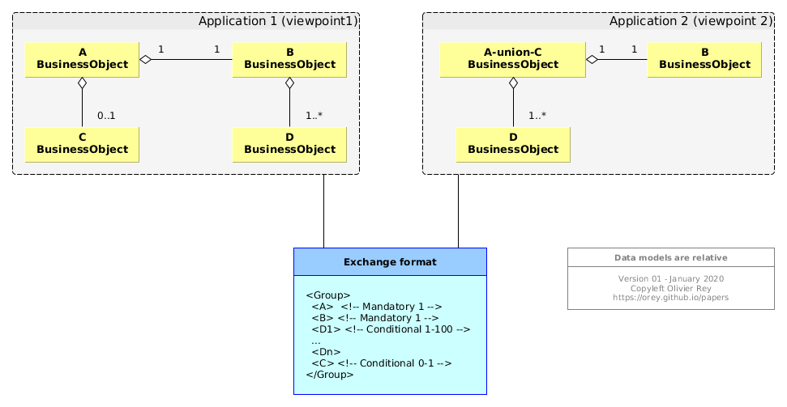

Legends of IT
 (Image from Les aventures de Tintin by Hergé)
(Image from Les aventures de Tintin by Hergé)
Information technology (IT) is a very recent engineering discipline and no one implied in IT projects should never forget this fact. Like all recent technological discipline at the heart of all modern businesses, it is both a marvelous tool, because it is "soft"-ware, a formidable enabler for business, and as it is representing lots of money, it is also a great place for legends and marketing messages.
As IT is a very intellectual discipline, both an engineering discipline and a creative activity, as the entry ticket of making a program run is very low, it is very easy to believe things that are untrue and to loose the global perspective of what IT is for and what are the problems it should answer to.
What criteria to judge IT legends?
The first problem we face in IT when trying to get some perspective is the problem of defining a set of criteria that will enable us to categorize the IT practices as "good" or "bad".
It is incredible that those criteria are not better known and shared, but after looking more carefully, it is easy to realize that there is no real consensus about those criteria. For sure, the consensus would mean that we could be able to estimate if some application is badly done. There are some books and some corporate or community practices but no real accepted consensus (except at low level coding).
So, we will define our own set of criteria as a kind of compass that will guide us through this journey of illusions.
Criteria #1: Simplicity
Simplicity will be our first criteria. Software should be the simplest possible, software architecture also and so is IT architecture.
Where complexity is, failure will be as high maintenance costs.
Criteria #2: As little dependencies as possible
Dependencies should be limited to their bare minimum because they will bring constraints on your application.
In particular, reusability of external components creates dependencies that jeopardize the value of the application and its capacity to evolve freely. Are you writing valuable programs or are you developing plugins for the last trendy giga-framework?
Criteria #3: Adaptability
Adaptability must be understood in the sense of ease of change. Adaptability is the reverse of technical debt: when a technology aggravates technical debt, it should never be used.
The definition we take for technical debt is defined very precisely in the article The graph-oriented programming paradigm. Adaptability means as little couplings as possible.
That's why reusability of external components can be a bad idea on the long run.
Criteria #4: Stick to standards, in particular in programming languages
At any cost, stick to the standard programming language and avoid, if you can proprietary languages. Standard languages you use should be supported by a stable community. This community does not have to be large, but you will be safer if the language specification is opened and/or massively supported and/or standardized by ANSI, ISO or any standardization office.
Avoid technologies owned by private companies or privately owned specific tools (like transpilers), those companies have the IP of the product and you will not be able to switch to another provider if they decide to make their language/tool paying, or if they decide to kill it.
Criteria #5: Economics matter
The real cost of an adaptable application should be known, so is the cost of the maintenance phase and the constraints that will come attached to this maintenance (technology, skills).
The real cost of a software encompasses all the phases of the project, that's why business process analysis, functional specifications and functional testing are core skills to the success of a project and to the economical data attached to it, before go-live and afterwards.
Representing a business domain
We'll not talk about games in this article but about professional applications and technology which aim is to automate some business domain.
Before automating a business domain, it is necessary to realize that IT primary movement is to "represent" it.
We can qualify this representation:
- The representation of any business is partial,
- It is included in the semantic space of the particular business,
- This representation is relative,
- It is composed by 2 parts: representing the data often with database tools and representing the business rules via programs.
Legend #1: Data are absolute
| # | Criteria | Applicable |
|---|---|---|
| 1 | Simplicity | Yes |
| 2 | No dependencies | - |
| 3 | Adaptability | Yes |
| 4 | Standards | - |
| 5 | Economics | Yes |
For sure, this statement or belief is wrong, as we have shown in our article, The real nature of data: data are the intersection of use cases and the semantic space. In the same semantic space, change the use cases and you will get different data models.
Legend #2: For a certain problem, there is only one code design
| # | Criteria | Applicable |
|---|---|---|
| 1 | Simplicity | Yes |
| 2 | No dependencies | - |
| 3 | Adaptability | Yes |
| 4 | Standards | - |
| 5 | Economics | Yes |
This legend is, first of all, correlated to the last point. Depending on the various use cases you will implement, you will have an application design that will change.
Second of all, depending on the evolutions of your application, evolutions that will be very complicated to anticipate, you will realize that a design was adapted or not to the direction the application goes to, during its lifetime.
Most of the time, experience shows that software engineers are very bad at predicting in what direction the application will grow. This is quite normal because to be able to forecast correctly in what direction a software will develop during years, you have to know very well the business and the trends of this particular business.

The Gamma et al. Design Patterns book aggravated this feeling that there is only one code design to every problem. Despite the fact that the patterns are presented like theorems, with applicability conditions that must absolutely be respected, their industrial use results most of time in aggravating the software technical debt. Why?
Our explanation is quite simple: because software engineers are bad at anticipating the future of their software, because they are no business experts. So, when they choose a pattern, even if this pattern seems relevant at the moment of choice, it is a bet on the future. And this bet is often wrong.
A wrong design pattern brings complexity (inverse of simplicity) and increased technical debt, sometimes huge increase (and this is the reverse of adaptability).
So be very careful about design patterns, because they may damage a lot your code.
Legend #3: Reusability is good
| # | Criteria | Applicable |
|---|---|---|
| 1 | Simplicity | Yes |
| 2 | No dependencies | Yes |
| 3 | Adaptability | Yes |
| 4 | Standards | Yes |
| 5 | Economics | Yes |
Reusability is a double-edged sword and not at all a sign of good software.
First of all, because software are made by creative humans, software generates attachment in the heart of the software engineers. When you worked several hours on a large program and realize that it is useless, you should be able to delete it without feelings. But the fact is, people get attached to the programs they did, because they did suffer doing them, and making them work.
There comes reusability as a way to save bad code. If the bad code is saved, you will generate more technical debt reusing it and it will generate useless complexity.
For sure, very often, when a feature seems generic, software engineers tend to make reusable code. We have to note that the first reusability movement is to create a function (!).
At micro level, this is for sure quite often necessary (see the bottom-up programming notion of Paul Graham in his ANSI Common Lisp book, or even the C++ Standard libray).
But, when it goes to higher level of code, the danger is everywhere. Should we reuse? Should we create some reusable code?
I remind a principle from an ancient VP Software Engineering at Amadeus, François Weissert, saying: "Reusability starts at 3". When you have twice the same code, you should be very careful about the code to be really reusable. When you have the same code 3 times, you can consider reusability (which does not mean you'll do something reusable outside your code).
We have to remember that the semantic of the business itself is not "reusable" and so reusability should be dealt with with a great deal of caution.
For some companies, reusability has become a way to make you a prisoner of their giga-framework, and especially of the mandatory updates that you must do if you want to keep been supported. Consider the giga Javascript frameworks such as Angular or React. Being forced to reuse their framework will change drastically your design because you will need to adapt to theirs.
Are there ways to do better? What are those frameworks provide that you really need? What is the real code you need to reuse? In some technical areas, that is obvious. As application developers, we don't want to recode the TLS protocol, so we reuse.
But in order to call an API in Javascript, do I need a big framework? No. Do I need some fancy components? Maybe yes, but what are the strings attached to this reusability? Will this corrupt my programming model? Do we really know what contract we are signing when we reuse a big framework?
Reusability is a powerful tool but also a very dangerous one. It also brings a dependency on your knowledge. By reusing, you make the choice of never knowing what really occurs underneath, but to stay on the surface of what the reusable component will show you.
Legend #4: You should use this framework because everyone uses it
| # | Criteria | Applicable |
|---|---|---|
| 1 | Simplicity | Yes |
| 2 | No dependencies | Yes |
| 3 | Adaptability | Yes |
| 4 | Standards | Yes |
| 5 | Economics | Yes |
Who says you should? Your IT service provider because they have trained people and they want to amortize the trainings of their employees? The framework provider to lock you up?
What are the consequences of such a choice?
- How often the framework provider delivers big updates?
- How often are you bound to migrate?
- If you do not migrate to the last framework versions, what risks are you taking?
- Did you consider securing the code of the framework, if you have access to it?
- Did you consider securing the documentation?
- If you have skilled software engineers in the technology, can they adapt easily to the framework? Now? In 5 years?
- Is it easy to get rid of the framework or are you bound to rewrite everything?
We won't cite too many samples but we have, in the recent history of IT, so many examples of bad technology that "you should use because everyone uses it".
GWT is the canonical example of a Google marketing non-industrial project, so are the first versions of Angular. I wish the software companies use their own crappy software before providing them to the community. Look at Angular: it is not used by Google on Google Workspace. Ask them why. Maybe because Angular is a marketing project that does not respect backward compatibility and is not reliable enough, or too complicated, or too unstable to be in production at Google's? So why would that framework be good for my company - which is not a software company...
Be reassured, Google is not the only one to propose marvelous magic tools which happen to be very bad choices on the long run, React from Facebook is the same kind of software components. Some design ideas are very interesting but often use just a small part of those giga-frameworks.
Front-end development is the place of all "innovations", so also the place where the "economics matter" principle is the most at stake. If your team code in HTML, Javascript and CSS, your code may still run and be maintainable in 10 years, whereas in 3 years, no one will still use the giga-framework that you choose now.
We can wonder who really needs those giga-frameworks, maybe some marketing companies for which rewriting the full front every 2 years is OK. If you are an institution, you can do a lot in plain JS with a few simple components (easily replaceable). If you are developing an application for your company, you mainly need forms and tables so you can stick to simple stuff (some companies may need more).
For backend developments, choose a standard programming language. This choice is complicated nowadays, because Java is not free anymore (as it was feared), and C# is Microsoft IP (even if it runs under Linux). That makes server side Python, JS or even PHP more appealing, even if the programming model is not the same.
Let's say, your choice should never be driven by your supplier or by the IT marketing messages. You will have sufficient problems to maintain your own code, don't reuse components and frameworks when you can avoid it. It violates the whole 5 criteria.
Legend #5: We are in a digital world with reliable data
| # | Criteria | Applicable |
|---|---|---|
| 1 | Simplicity | - |
| 2 | No dependencies | - |
| 3 | Adaptability | Yes |
| 4 | Standards | - |
| 5 | Economics | Yes |
Depending on the business domains, the data are more or less reliable.
When they are, we can build interfaces between systems that will exchange structured data, each of them sharing the same view of the grammar of the data (see case #1 in Figure 1 below). When the traffic is slow, when systems may have trouble interoperating or when the traffic is asynchronous, files containing structured data can be exchanged (see case #2 in Figure 1 below).
Take the referential data, for instance the list of customers of a retail company, the list of enterprises upon which collect social taxes, the list of parts mounted on an aircraft, all that data should be reliable but, quite often, they are not.
There are many reasons for that:
- The data life cycle is short and things change quickly,
- The number of data in the referential is very big so, even a small percentage of errors, represents a potential large problem,
- The global process of management of those data is based partially under spreadsheets,
- Several actors share responsibilities in a global inconsistent process with no reliable interfaces between systems (or between spreadsheets),
- Where there should exist only one referential, there are multiple inconsistent referential systems with a difficulty of knowing what is the correct data,
- Etc.
We have to face it: the world is not perfect, and so are the data.
Denial or acceptation
To face such a reality, two strategies can be chosen:
- Denial, which leads to build software that expect data to be complete, consistent and perfect;
- Acceptation, which leads to more or less complex ways to protect the application.
Denial leads to applications that are never working properly because they expect correct data.
That can be solved by people correcting the data on the long run, or by opening special rights inside the application, which can put at stake its security and integrity.
Quite often, the application is realized to be consistent, but, facing the reality of impossibility of use because of rotten data, the application controls are released to make it usable which creates an explosion of maintenance costs and does not solve really the data quality problems.
Acceptation has a cost that must be integrated into the cost of the application, both at build time and at maintenance time.
The "façade" pattern
One common solution consequence of accepting bad data as a requirement, is consisting in using the façade pattern: Instead of loading data inside your application, you are loading data into a façade that will be in charge of cleaning/disambiguating/complementing the data before the output is loaded into the application.
Figure 1: Various kinds of façades
The simplest case of façade is the case #3: the façade is a set of programs that which transforms data1 and data2 into data that can be loaded safely insde the target application.
Depending on the gravity of data inconsistency, the façade could be a small application with its own database, its own data processing chain, able potentially to calculate and store data versions and deltas between versions and to apply complex business rules to chose the right data to be imported inside the application (case #4).
For sure, if the flow of data is continuous, the façade must be monitored and tuned with the right rules, in order to sustain the flow and be able to feed the application with correct and reliable data.
Never mix concerns
In all cases, the data cleanup should never pollute the application itself and so, be segregated from it. The façade must be a separate component, a separate database if needed, and separate software. Because the application has a job to do and its design should be done considering it, the data cleanup must be done up-front.
The consequence of denial is to mix the 2 kinds of features inside the same application (business functionality and data cleansing), and that's why this solution ends up inevitably in bad software and bad data.
Legend #6: We can replace interfaces by sharing tables in a database
| # | Criteria | Applicable |
|---|---|---|
| 1 | Simplicity | Yes |
| 2 | No dependencies | Yes |
| 3 | Adaptability | Yes |
| 4 | Standards | - |
| 5 | Economics | Yes |
Each application is answering to a set of use cases, and the application data are the result of the intersection between the list of use cases with the business semantic space (see The real nature of data).
That means that each application deserves a data model fit to its needs so different the one from the other. For sure, applications may share data, but their sharing must remains as minimal as possible and bear the less structure as possible.

Figure 2: Data models are adapted to each application
In Figure2, we can see how 3 different data representations are semantically equivalent but absolutely not technically equivalent. We'll note that the exchange format is the most "loose" format. That enables each stakeholder in the exchange to rebuild its data structures conforming to its use cases.
Figure 2 is showing an interface between systems. If we were to project the viewpoint1 directly in Application 2, we would distort the data model of Application 2 imposing, as a constraint, a part of the datamodel of Application 1. Let's suppose we do that with database materialized views, we will distort and create code of Application 2 based on data structures (that can change) of Application 1.
This practice is very dirty and very risky because:
- It creates an operational complexity, Application 2 not being autonomous anymore,
- It creates a dependency that is useless, because an interface would have transform this hard dependency into a loose dependency (at the exchange format level and not at the database level),
- It creates a design and code distortion in the Application 2, because the
viewpoint1is not what was imagined as a design for Application 2.
The last point is quite interesting: by transforming the exchange format into viewpoint2, the Application 2 can do some modifications on the objects transported by the exchange format to make them its own. In other terms, the transformation can include business rules and never store A or C but A union C. Quite often, transactions between systems are triggering business rules to adapt the incoming data to the target semantic space.
The conclusion is, for sure, we can't replace interfaces by sharing of data structures.
The second conclusion is: we can't group several business domains inside the same database, because one of them will drive and the others will live at the rhythm of the dominant.
The message of PLM vendors, a legend rooted in the past
We will make a specific note for marketing messages coming from PLM (Product Lifecycle Management) vendors. Each of them proposes products that can address the 3 engineering divisions of any industrial company:
- Engineering,
- Manufacturing engineering,
- Support engineering.
Each PLM vendor indicates that everything can cohabit in the same database, whereas it is not the case, as we will show.
Maybe, it is worth reminding the history of those systems and make a little legend archaeology.
Figure 3: From EDMS to PLM
At the beginning, the 3 engineering disciplines are working in paper separately and exchange documents (#1 in Figure 3). When IT comes from the first tools, the documents are becoming office documents and models and are shared in a Electronic Document Management System (EDMS, #2 in Figure 3). This phase is called "collaboration", because each organization can access to the documents of the other.
Then comes the PDM: What if we index all documents on the part number? Every stakeholder will be able to better find the documents applicable to its parts, whatever the perspective (design , manufacturing or support). This is shown in #3 in Picture 3.
We can note that this evolution follows the general application evolution described in the Real Nature of Data.
The technology advancing, the products are becoming more complex and we have to manage lots of configurations and options. All data must be put inside a database in a data model that is adapted to... To what exactly the PLM data model is adapted? To Engineering requirements of course, because they design the product. We keep the collaboration and every stakeholder can benefit from structured data... of the Engineering (case #4 on Figure 3). Ah, too bad for Manufacturing and Support?
This is where the software companies are wrong: When you enter the step of designing the activities of the semantic domain names "Engineering", the objects that you model and their lifecycle are not always the ones that are used by Manufacturing or Support.
For sure, you can try to "extend" the objects and the lifecycle of the support to integrate new requirements, but if you keep one single database, you will have the problem of translation that you have when changing semantic spaces. Because Manufacturing engineering not Engineering, nor is Support Engineering.
The case #5 of the Figure 3 shows the general case:
- You have 3 PLMs, one for each domain, perfectly adapted to the use cases, the objects, the lifecycles and the rhythms of processes;
- You have potentially 2 façade applications that can be complex enough to have their own databases, make their own deltas between 2 Engineering deliveries;
- You have a delivery software in Engineering that is producing something consistent for the downstream activities, being Manufacturing engineering or Support Engineering.
Sometimes, the case #4 can work if your products are simple, if the engineering is knowing 100% of the mounted parts and if the support is simple. But in big industries such as aerospace, the model #4 is not working.
The case of industry is not a particular case: You can't fit 2 or more different business semantic domains in the same database. Trying to make those semantic domains cohabit in the same instance is leading almost inevitably to one semantic domain A imposing its rules (rhythm, lifecycle, data model, etc.) to another semantic domain B. That generates downstream systems that will recreate the models and lifecycle that B cannot operate in a PLM dominated by A (often with spreadsheets, small databases, reports and manual works).
This also generates horrible costs and non convergence of projects, which is common in the PLM area.
The real challenge becomes to identify properly those "semantic domains". The article The graph-oriented programming paradigm proposes a vision semantic domains identification.
PLM vendors, intoxicated in a way by their historical "collaboration"-based marketing message, did not realize that making a real application with structured data was specializing the product to a certain set of use cases, and so to a particular business.
They end up selling "mega-monoliths" without realizing that this message is contradictory to the IT architecture trends everywhere else apart from industry.
Legend #7: Abandon monolith, welcome micro-services
Ongoing.
Legend #8: We have great tools to develop applications
| # | Criteria | Applicable |
|---|---|---|
| 1 | Simplicity | Yes |
| 2 | No dependencies | Yes |
| 3 | Adaptability | Yes |
| 4 | Standards | - |
| 5 | Economics | Yes |
This part will introduce The graph-oriented programming paradigm article.
Even if we can realize applications in object-oriented programming and with relational databases, this technology is very bad in terms of coupling and generates, from day 1, a huge technical debt, making it a logical consequence to have an exponential explosion of the maintenance costs with time (cost of the function point tending towards the infinite).
Can we stick to this set of tools and technologies that we have since almost 30 years: OOP + relational DB? Can we open our eyes on the economical heresy brought by this technology, especially in maintenance phases? Can we see our software activities differently, by taking a step back on those last decades?
Are we doomed to accept that a front-end must use giga-frameworks and must be rewritten every 2 years while the backend has inevitably exponential maintenance costs over 10 years?
We are at the beginning of the story of IT
No, we are not doomed, because we are just at the beginning of the history of IT. Some could say that AI will enhance our capacity to write code. Yes, maybe, but AI won't find alternate programming systems to enter the new phase of our IT discovery. I fear we have to do the job.
Graph-oriented programming paradigm is a way forward that seems very promising, but there should be plenty of alternate ways of doing stuff.
I just hope AI won't prevent us to be as creative as the 70s/80s where, instead of just following marketing-led companies, software engineers and researchers were experimenting, creating and discovering.
Don't believe in legends. Find new paths. We need them.
(July 14 2014)